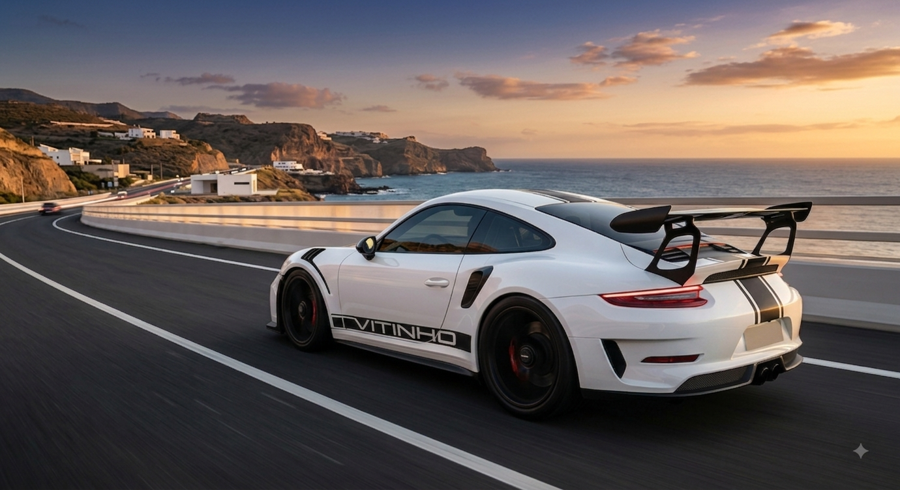

O lendário Porsche 911 GT3 RS
Por: Victor Emanuel Honorato Brito
Projetado para as pistas, o GT3 RS combina motor aspirado de alta rotação e uma engenharia aerodinâmica impecável.
Fonte: Porsche News
Tudo sobre os supercarros e hipercarros mais fascinantes do planeta

Por: Victor Emanuel Honorato Brito
Projetado para as pistas, o GT3 RS combina motor aspirado de alta rotação e uma engenharia aerodinâmica impecável.
Fonte: Porsche News

Por: Victor Emanuel Honorato Brito
Os hipercarros modernos utilizam materiais espaciais e motores lendários para quebrar recordes insanos de velocidade.
Fonte: Top Gear

Por: Victor Emanuel Honorato Brito
Leve e incrivelmente resistente, esse material é a base do chassi dos veículos esportivos mais rápidos do mundo.
Fonte: AutoEsporte

Por: Victor Emanuel Honorato Brito
Com acelerações instantâneas de 0 a 100 km/h em menos de dois segundos, os elétricos redefinem o conceito de performance.
Fonte: Motor1

Por: Victor Emanuel Honorato Brito
Conhecido como "Inferno Verde", esse circuito na Alemanha é o palco oficial onde as montadoras provam o valor de suas máquinas.
Fonte: Motorsport